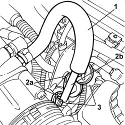

3330D42 VACUUM INCREASE VALVE - R&R
- Path
- Procedures > 33 BRAKES > 3330 HYDRAULIC BRAKING SYSTEM > 3330D BRAKE VACUUM SYSTEM > 3330D42 VACUUM INCREASE VALVE - R&R
- Kind
- repair procedure (removal / refitting; the operation number is the code)
- Applies to
- all engines; all production periods
- Interactive page
- https://sloeber94.github.io/elrnDB-lThss/en/#/156204
Applies to: all engines; all production periods
 Removing
Removing
 Refitting
Refitting- Open the bonnet
See in Op. 7040D50 ENGINE COMPARTMENT UPPER SOUND INSULATION SHIELD - R.R.
1. Remove the brake servo vacuum pipe from the vacuum increase valve.
2. Open the bands (2a) retaining the vacuum increase valve (2b).
3. Disconnect the outlet pipes and remove the vacuum increase valve.

Applies to: all engines; all production periods
Refitting
Removing- Connect the outlet pipes to the vacuum increase valve.
- Position the valve and close the retaining bands.
- Fit the brake servo vacuum pipe on the vacuum increase valve, making sure that it is correctly fitted.
See in Op. 7040D50 ENGINE COMPARTMENT UPPER SOUND INSULATION SHIELD - R.R.
- Close the bonnet